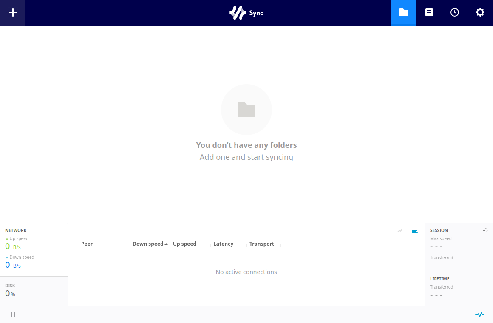

SyncPilot puts the official Resilio Web UI inside a native desktop window and
manages the official rslsync daemon behind it.
Every screen is the official one — nothing to re-learn.

Folders, peers, transfers, preferences, activation — all of it is the official Resilio interface, version-matched to your rslsync build. SyncPilot adds everything the official Linux story was missing.
The window embeds the official Resilio Web UI itself — same screens, same workflow as the Windows and macOS clients, nothing re-implemented to fall behind.
One-click start and stop, adopts an already-running daemon, and a crash watchdog restarts it with exponential backoff. Optionally keeps running after the app exits.
No rslsync on the machine? SyncPilot offers to download the official binary straight from Resilio's CDN, sha256-verified, into ~/.local/bin.
Every release ships signed updater artifacts. SyncPilot checks the GitHub release and updates itself — no manual re-downloads.
Tray icon with quick actions, hide-to-tray on close, launch at login via XDG autostart, and a standalone native settings window.
The Web UI stays on 127.0.0.1 behind an auth-injecting loopback proxy — no login prompts, and the daemon never serves an unauthenticated request.
Same feel as installing the official client on any other platform.
Grab the deb, rpm or AppImage for your architecture from the release page.
SyncPilot starts the official daemon and hands the window to the official interface. No rslsync yet? One click fetches it.
Activate and add folders through the official wizard — exactly like on Windows and macOS.
Your keys and files never leave your machine. SyncPilot generates the daemon's credentials locally, serves the official UI through a loopback-only proxy, and ships no telemetry of its own. All P2P traffic is handled by the official binary.
v0.2.0 — install, launch, done. The official rslsync binary is fetched on first start if missing.